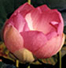

|
|
|||||||
|
May's theme is "Asian Pacific American Heritage Month." Come to the LAC Library foyer to see other displayed items such as books and memorabilia.
|
|||||||
|  |
Books | Videos Online databases | Internet resources |
||||||
|
Searching for resources on Asian Pacific American Heritage The LBCC Library catalog, called Voyager, is Web-based and searchable via the Internet at: http://voyager2.lbcc.edu/ Use "Keyword" search or "Subject " search to browse the catalog. For example, you may use keywords such as: Chinese painting, Vietnam war, Asian gangs, and Japanese internment, etc. Consult the Reference Librarian for suggestions of other topics. Any one Library of Congress Classification Number (or Call Number) will not be inclusive of all books on the subject in this Library. Variances in the focus of books result in their being cataloged with different call numbers. For example, a search on the subject of "Asian culture" will show books with the following call numbers: L - Education The following list is not comprehensive of our resources on Asian Pacific American Heritage. It is but a small sample of what LBCC Library owns. Please search the online catalog for the campus location and the availability of the item. Gays and lesbians in Asia and the Pacific : social and human services / Gerard Sullivan, Laurence Wai-Teng Leong,, editors. HQ76.3 A78 G39 Comfort woman : a Filipina's story of prostitution and slavery under the Japanese military / Maria Rosa Henson. Southeast Asia : an introductory history. Milton Osborne. DS525 O8 Breaking silence : an anthology of contemporary Asian American poets. PS591 A76 B74 Warlords of crime : Chinese secret societies--the new Mafia. Gerald Posner. HV6453 H75 P67 The Forbidden stitch : an Asian American women's anthology. PS153 A84 F66 Home to stay : Asian American women's fiction / edited by Sylvia Watanabe. PS647 A75 H58 The transparent thread : Asian philosophy in recent American art. Gelburd, Gail. N6512 G34 The retreat from race : Asian-American admissions and racial politics. Takagi, Dana Y., LC212.42 T35 Reading the literatures of Asian America / edited by Shirley Geok-lin. PS153 A84 R43 The Open boat : poems from Asian America. PS591 A76 O6 Growing up Asian American : an anthology. PS508 A8 G76 Unbroken thread : an anthology of plays by Asian American women. PS628 A85 U53 Living in America : poetry and fiction by South Asian American writers. PS508 S67 L58 On becoming Filipino : selected writings of Carlos Bulosan. Bulosan, Carlos. PR9550.9 B8 A6 Hmong means free : life in Laos and America. DS558.8 H56 Asian Americans : contemporary trends and issues / Pyong Gap Min, editor. E184 O6 M56 Margins and mainstreams : Asians in American history and culture. Okihiro, Gary Y., E184 O6 O38 The dream shattered : Vietnamese gangs in America / Patrick Du Phuoc Long. HV6439 U5 D8 Filipino American lives / Yen Le Espiritu. F869 S22 E9 Asian Americans : opposing viewpoints / William Dudley, editor. E184 O6 A8445 Asian-American women writers. PS153 A84 A83 Financial aid for Asian Americans. LB2338 F5644 An interethnic companion to Asian American literature / editor, King-Kok. PS153 A84 I58 Leaving deep water : the lives of Asian American women at the crossroads. Chow, Claire S. E184 O6 C49 Asian American literature : reviews and criticism of works by America. PS153 A84 A82 Asian American drama : 9 plays from the multiethnic landscape. PS628 A85 A88 Orientals : Asian Americans in popular culture / Robert G. Lee. E184 O6 L48 The traditional literature of Cambodia : a preliminary guide / by Judith Jacob. PL4328 J33 Encyclopedia of Asian history. DS31 E53 Folk stories of the Hmong : peoples of Laos, Thailand, and Vietnam. GR308.5 H67 F65 The art of Southeast Asia : Cambodia, Vietnam, Thailand, Laos, Burma. Rawson, Philip S. N5877 A8 R3 The lands of charm and cruelty : travels in Southeast Asia / by Stan Sesser. DS522.6 S47 Cambodian system of writing and beginning reader with drills and glossary. Huffman, Franklin E. PL4322 H8 The Cambridge history of Southeast Asia / edited by Nicholas Tarling. DS525 C36 Cambodian culture since 1975 : homeland and exile. DS554.8 C359 Asia rising. Jim Rohwer. HC460.5 R64 Megatrends Asia : eight Asian megatrends that are reshaping our world. Naisbitt, John. HC412 N2433 The Khmers / Ian Mabbett and David Chandler. DS554.3 M33 From Vietnam, Laos, and Cambodia : a refugee experience in the United States. Hein, Jeremy. HV640.5 I5 H44 Children of Cambodia's killing fields : memoirs by survivors. DS554.8 C46 Chasing the dragon : into the heart of the Golden Triangle / Christopher Cox. DS526.9 C69 To top of page Videos are available to be viewed in the Library at the Media Services desk in LAC Library. China: The Agony Of A Giant (105403,VH) 1990Great Tales In Asian Art (107344,VH) Approaching the Apocalypse: 1971-1975 (106828,VH) The Nisei: The Pride and the Shame (106724,16) The Tale Of Genji (105084,VH) To top of page Searching for periodical articles in general on Asian Pacific American Heritage The following online databases are just a few among the list of databases accessible at: http://lib.lbcc.edu/databases.html Follow instruction for log-in. Ancient and Medieval History Online (Facts on File) Focuses on Egypt, Mesopotamia, Greece, Rome, Africa, Europe, the Americas, Asia, and Islamic Empire from prehistory through the 1500s. Academic Search Premiere (EBSCOhost) This multi-disciplinary database provides full text for more than 4,600 journals, including full text for nearly 3,900 peer-reviewed titles. PDF backfiles to 1975 or further are available for well over one hundred journals, and searchable cited references are provided for more than 1,000 titles Offers thousands of articles on a wide variety of topics, ProQuest provides access to approximately 1,500 scholarly and general interest periodicals, many of them full-text. To search the magazine/newspaper/journal databases (i.e., Proquest, SIRS,Facts on File)listed at: http://lib.lbcc.edu/databases.html, use words appropriate to the discipline and subfield, including :
Searching for Asian Pacific American Heritage resources on the Internet Use a Search Engine such as Google (http://www.google.com) when you know the exact terms or names of your topic.
Web sites related to Asian Pacific American Heritage To top of page Exhibits home ||Long Beach City College || Library Home Written by Kim Barclay July 26, 2012 |
|||||||